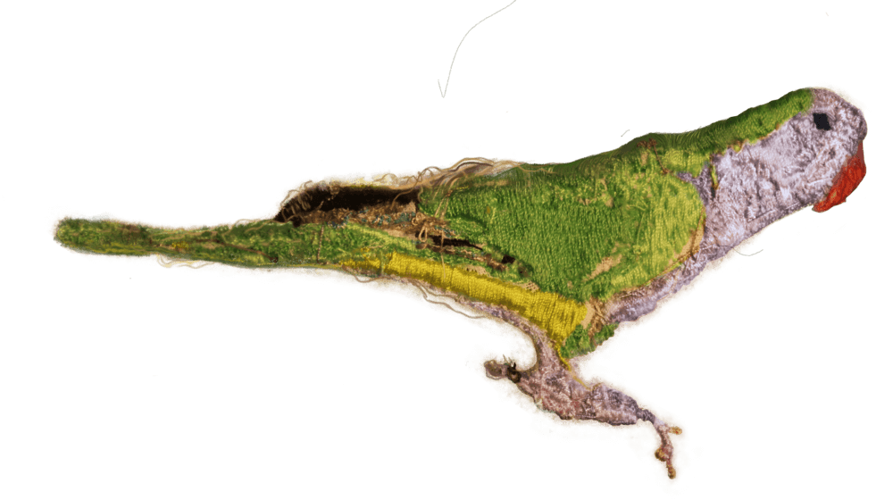

On Seas, Parrots and Intruders
(A Global South contribution for decolonizing the invasion ecologies approach)
What are we talking about when we say "Mediterranean" from our Global South situation? How is the image of a spatially distant sea, but with concrete resonances at a geopolitical level throughout history?
We like to see the Mediterranean in its liquid dimension: water-transport, water-exclusion, water-territory, water that distances and brings us closer. Water that connects with the Atlantic mass which, in turn, unveils and on which our south-globality becomes visible.
South-global species (human and non-human) arrive on the shores of the Mediterranean. Among them is the Argentine parrot, a species brought by force and which soon becomes "invasive" in the eyes of the conservationist powers.
The Argentine parrot is for us a metaphor and a pretext to reflect on what it is to be invasive, what is hidden under the conservationist purism, and how to think about new scenarios in which inter contamination, creolization, and dialogue challenge the occluded territories.
De Mares, Cotorras e Intrusos
(Una contribución desde el Sur Global para decolonizar el enfoque de las ecologías invasivas)
¿De qué hablamos cuando decimos "Mediterráneo" desde nuestro Sur Global? ¿Cómo se configura una imagen de un mar distante espacialmente pero con resonancias concretas a nivel geopolítico a través de la historia?
Nos gusta ver al Mediterráneo en su dimensión líquida: agua-transporte, agua-exclusión, agua-territorio, agua que aleja y que acerca. Agua que conecta con la masa Atlántica que, a su vez, devela y revela y sobre la que se hace visible nuestra sur-globalidad.
A las costas del Mediterráneo llegan especies sur-globales (humanas y no-humanas). Entre ellas, la cotorra Argentina, especie llevada a la fuerza y que poco después se convierte en "invasora" a los ojos de los poderes conservacionistas.
La cotorra Argentina es para nosotros una metáfora y un pretexto para reflexionar sobre qué es ser invasor, qué se esconde bajo el purismo conservacionista y cómo pensar nuevos escenarios en los que la intercontaminación, la creolización y el diálogo desafíen los territorios oclusos.